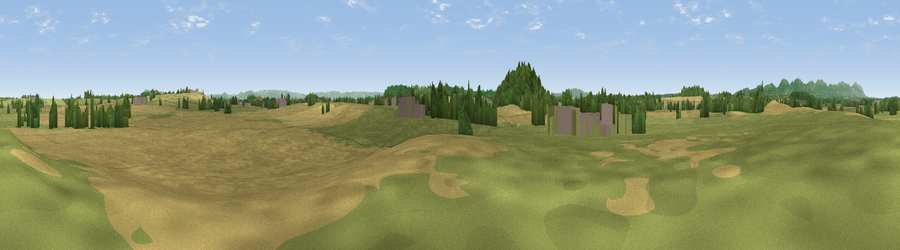

Tuts Hill
#30110 in England · top 69% of its area beats it · near EldersfieldThe view, rendered

A 360° render of this exact spot computed from the terrain model, tree cover and land cover — summer colours, afternoon light, calibrated against photographs of famous viewpoints. Real trees, hedges and buildings will differ in detail.
The panorama
Grey silhouette: terrain skyline in each direction (720 bearings, Earth curvature and refraction included). Dashed green: skyline with trees (+15 m) and buildings (+8 m) as obstacles. Blue strip: how far the ground is visible on each bearing.
Where the view opens
Wedge length = distance to the farthest visible ground on that bearing (vegetation-aware). Rings at 10, 25 and 50 km.
What fills the view
50% cropland · 38% grassland · 11% woodland ·
Angular shares of the visible panorama (visual magnitude), not map area. Landscape diversity 0.43 (0–1 Shannon).
Key numbers
More beautiful places nearby
The staircase of upgrades: each row has a higher view potential than everything closer. Driving times are estimates from straight-line distance, calibrated against real road routing — check an actual route before setting out.
| Place | Direction | Drive | Score |
|---|---|---|---|
| Viewpoint near Eldersfield | SSW · 1 km | ~2 min | 55.3 |
| Corse Wood Hill | S · 3 km | ~7 min | 60.7 |
| Corse Grove Hill | SSE · 3 km | ~8 min | 67.6 |
| Chase End Hill | NW · 7 km | ~14 min | 81.5 |
| Ragged Stone Hill | NW · 7 km | ~15 min | 82.5 |
| Midsummer Hill | NW · 8 km | ~16 min | 83.0 |
| Millennium Hill | NNW · 10 km | ~19 min | 86.9 |
| Worcestershire Beacon | NNW · 15 km | ~26 min | 87.1 |
51.98015, -2.27336 · source: osm peak · position refined by local search. Computed location — check access rights before visiting.